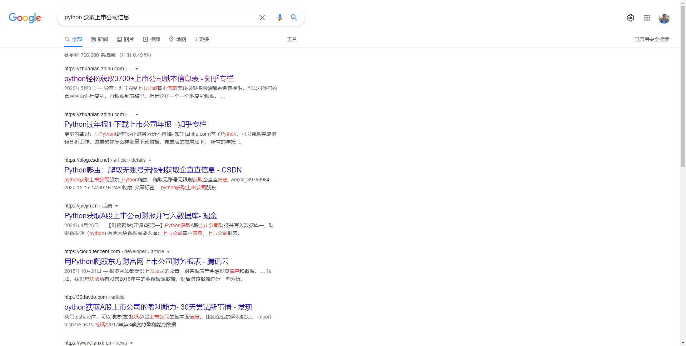
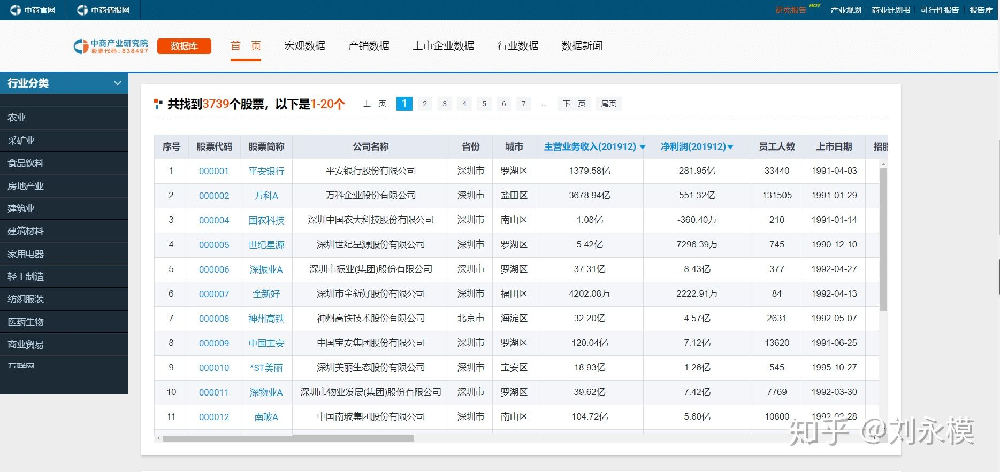

从中商产业研究院爬取2021年A股上市企业基本信息表
选这个网站来爬不是因为它有多好，而是因为爬它很简单，跟我们也有关系，就先爬着玩一下，当作一个入门吧。
原代码
本着先易后难的精神，我在谷歌搜索了“python 获取上市公司信息”：

找到了这篇博文，这是一篇从中商产业研究院网站爬取2019年A股上市公司基本信息的博文，它告诉我们在这里可以看到2019年A股上市公司的基本信息，大致如下图：

并且提供了以下一段很短的代码来爬取：
import pandas as pd
import time
start_time = time.time() # 获取程序开始运行时间
df=pd.DataFrame( ) # 定义一个空的DataFrame用于存储数据
try:
for i in range(1,201): # 爬取全部187页数据，设置为200页，确保都覆盖
url = 'http://s.askci.com/stock/a/?reportTime=2019-12-31&pageNum={i}'.format(i=i) # 日期可以改，可获取季度数据
df = pd.concat([df,pd.read_html(url)[3].loc[:,:]]) # 第1个表格故填[0],经观察发现所需表格是网页中第4个表格，故为[3]。获得后纵向追加到df中
time.sleep(0.5) # 每隔0.5秒访问一次，应对反爬措施
endtime = time.time() - start_time
print('正在获取上市公司基本信息表第'+str(i)+'页','已运行%.2f秒' % endtime)
except:
pass
df['股票代码'] = df['股票代码'].astype('str').str.zfill(6) # 将原本的int数据类型转换为文本，补齐股票代码为6位，用的时候必须加上.str前缀
df.drop(['序号','招股书','公司财报'],axis=1,inplace=True) # 删除多余的列，axis=1（按列方向操作）、inplace=True（修改完数据，在原数据上保存）
df.to_excel(r'2019年上市公司基本信息表.xlsx', encoding='gbk', index=0)
print('\n','*******目标爬取完成*******')大致采用了pandas模块来读取网页信息，按照每页网页的url规律来模拟跳转页面，然后删掉无效信息，保存为表格文件。
在这段代码中，我们还可以看到“try+except”的异常监测机制，方法链的使用，时间模块的使用，字符串前面加“r”表示无转义字符的字符串，等等。
修改代码
然而这份代码已经陈旧了，我们想要最新的信息怎么办呢。打开中商产业研究院首页，点击产业数据→数据库→A股数据，我们果然找到了最新的信息。替换一下原代码中的url就好啦。同样的，把最大页数也要改一下。
在试着跑了一下之后我发现，sleep时间0.5秒还是太短了，跑不完200多页就被反爬了，于是我改到5秒。顺利爬取完毕，得到表格。
我们采用的代码如下：
import pandas as pd
import time
start_time = time.time() # 获取程序开始运行时间
df=pd.DataFrame( ) # 定义一个空的DataFrame用于存储数据
try:
for i in range(1,226): # 爬取全部187页数据，设置为200页，确保都覆盖
url = 'https://s.askci.com/stock/a/0-0?reportTime=2021-06-30&pageNum={i}#QueryCondition'.format(i=i) # 日期可以改，可获取季度数据
df = pd.concat([df,pd.read_html(url)[3].loc[:,:]]) # 第1个表格故填[0],经观察发现所需表格是网页中第4个表格，故为[3]。获得后纵向追加到df中
time.sleep(5) # 每隔1秒访问一次，应对反爬措施
endtime = time.time() - start_time
print('正在获取上市公司基本信息表第'+str(i)+'页','已运行%.2f秒' % endtime)
except:
print('出错啦')
df['股票代码'] = df['股票代码'].astype('str').str.zfill(6) # 将原本的int数据类型转换为文本，补齐股票代码为6位，用的时候必须加上.str前缀
df.drop(['序号','招股书','公司财报'],axis=1,inplace=True) # 删除多余的列，axis=1（按列方向操作）、inplace=True（修改完数据，在原数据上保存）
df.to_excel(r'2021年上市公司基本信息表.xlsx', encoding='gbk', index=0)
print('\n','*******目标爬取完成*******')怎么样，是不是很简单呀😆😆
后续计划
经过一些初步研究，我发现比较稳定的、成体系的信息来源包括：
- 百度百科对上市公司的介绍；
- 沪交所、深交所等官方数据库，或东方财富、网易财经等财经网站；
- 其他研究人员公布的数据集；
- Tushare、Akshare等Python开源金融库。
目前我感觉如果要从每个公司的官网去爬简介太困难了，因为极其不成体系，每个公司的简介页面都不尽相同，没有规律可言。
公司财报确实是一个很好的渠道，解析财报需要至少以下工作：
- 足够大的硬盘，因为我们要下载很多很多的文件，处理很多很多的文件；
- Python对PDF文件的处理办法，PDF转其他格式的办法，因为财报大部分都是PDF格式的。
后面我们看情况把这些都爬一下或者爬一部分。做完这些，我们再：
- 标定数据集；
- 与NLP相关研究进行对接。
我们一点点的做起来就好啦，都不难的，最终只取决于我们需要什么样的信息。